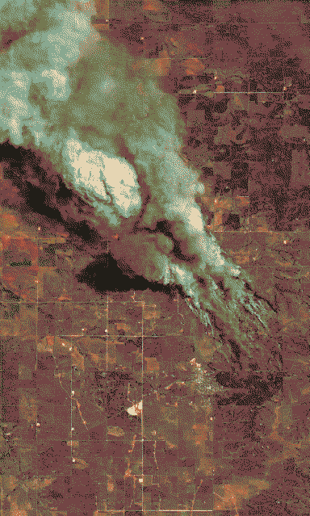

ends of worlds
whilst everyone dreams of (dreads, remembers, tries to forget, despairs at) a lost or incoming Utopia - multiple slow collapses (ecological, geological, psychosocial) have been held in an eternal, unbreaking storm.

yearning to join into one story that makes it all make sense, but they can’t.
the cast might represent different perspectives on this collapse - on a scale of sensitisation-desensitisation, wonder-dread.
allogenesis
Monolith redefined humanity’s perception of itself as a networked species and the repercussions are dreadful/wonderful - a collapse of the ability to distinguish between the geological, the biological, the psychological - or a collapse of the dogma delineating these as seperate systems.
it stopped making sense - or being possible - to distinguish fossil from pseudofossil. it became known that the sands had long since stopped following the rhythms of the winds, but were forecasting psychogenic tremors.
when all context is lost, all that is left is an imprint of many very particular melancholies.